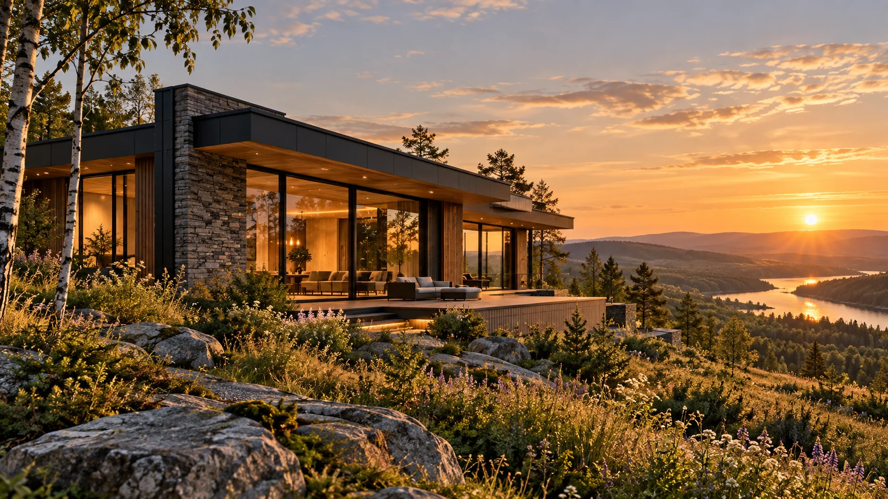
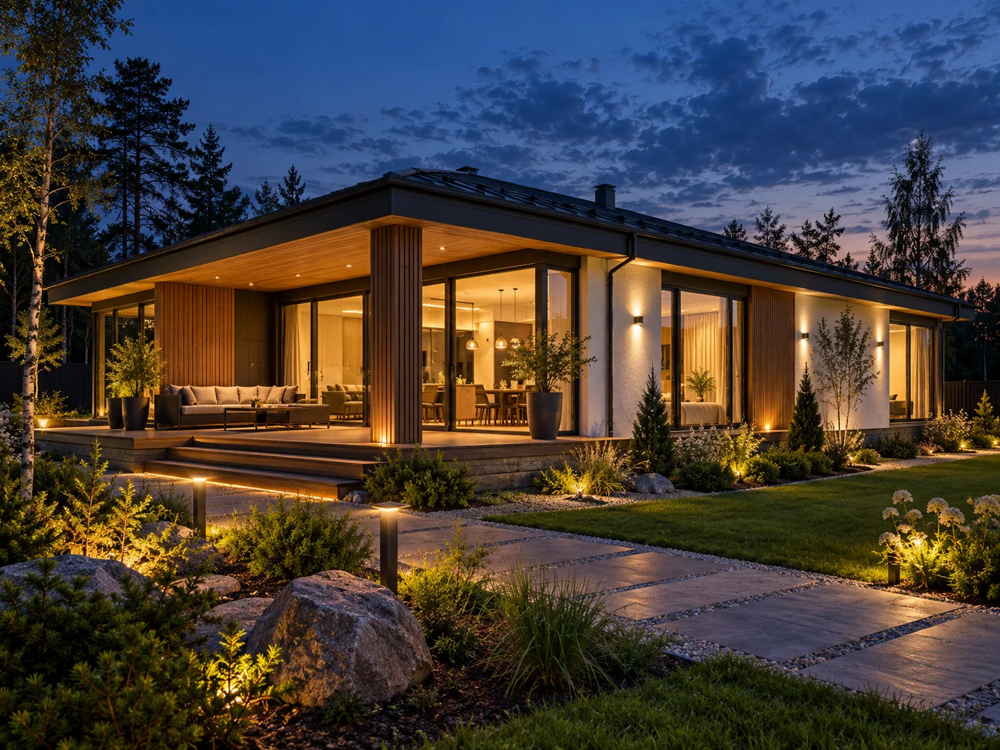

Тёплый
контур
- Фундамент и конструкции
- Кровля, окна и двери
- Фасадное решение

Выберите проект, разберитесь в комплектации
и обсудите дом, уже понимая следующий шаг.
Утром — тишина в кабинете. Днём — светлая гостиная. Вечером — ужин на террасе. Дом выбирают для таких обычных моментов.
Начните с того, как вы живёте: сколько нужно личных комнат, нужен ли кабинет, как часто собираются гости. Фильтр покажет проекты, которые подходят именно под этот сценарий.
Подбор проекта и обсуждение участка ↗Сравните общую зону, спальни и выход на участок
Поймите, что входит в дом на каждом этапе
Оставьте запрос по выбранному проекту, а не «в пустоту»
Площадь, этажность, кабинет,
терраса и место для гостей.
Таких проектов пока нет. Измените параметры или сбросьте фильтры.
Обойдите дом, поднимитесь над крышей,
приблизьте детали. Архитектура — в ваших руках.
Загрузка объёмной модели по мере просмотра страницы.
Потяните мышью — поворот и наклон · + / − — масштаб · Ctrl + колёсико — приближениеНажмите «Вращать дом»: один палец — поворот, два — масштаб. «Готово» вернёт прокрутку страницы.
Глубокая терраса, лёгкое остекление и тёплый камень. Все фасады собраны в одной объёмной модели.
Архитектурный концепт. Фасады и материалы показывают идею дома; размеры и планировку уточняем при проектировании.
Камень, дерево, свет за панорамными окнами и терраса. Короткое видео помогает увидеть настроение архитектуры до первого разговора.
Демонстрационное движение по исходной визуализации. Не съёмка построенного объекта и не замена рабочему проекту.
АРХИТЕКТУРА ПОВСЕДНЕВНОГО КОМФОРТАПланировка, комплектация, участок и смета — четыре вещи, которые стоит обсудить до начала стройки.
Откройте карточку проекта: оцените общую зону, приватные комнаты и выход на участок. Так первая встреча начинается с предметного разговора.
Сравните три уровня готовности. После выбора проекта и анализа участка компания фиксирует состав работ, сроки и стоимость в смете.
Заявка содержит выбранный проект, комплектацию и ваши пожелания. Специалист видит контекст до звонка, поэтому вам не нужно повторять вводные.
Состав работ, сроки и стоимость
уточняются после анализа участка.
Начните с предварительного сценария: какая квартира есть сейчас, какой дом вы ищете и нужна ли доплата. После этого можно обсуждать реальные варианты.
Обмен зависит от объекта, его ликвидности и условий сделки.Ваши пожелания, участок, сроки и ориентир по бюджету.
Планировка, комплектация и состав работ под ваш участок.
Согласованные этапы, документы и приёмка результата.
Передача дома и условия дальнейшего сопровождения.
Что стоит запросить у компании
до принятия решения.
Какие работы включены, какие считаются отдельно и что зависит от участка. Сравнивать нужно одинаковые комплектации.
Фотографии этапов, подтверждённые проекты и возможность задать вопросы по строительству. Иллюстрация сама по себе не доказывает опыт.
Порядок согласования изменений, передачи этапов и гарантийные условия. Всё это уточняется до начала работ.
В версии для компании этот блок наполняется только её подтверждёнными документами и объектами. Здесь нет вымышленных отзывов и реализованных кейсов.
Не обязательно сразу знать название проекта. Начните с участка, семьи и того, как вы хотите жить.
Этот сайт — демонстрационный концепт. В рабочем каталоге ориентиры и состав комплектации должны основываться на расчётах компании. Финальная смета зависит от проекта, участка и выбранных работ.
Возможность изменений обсуждается с архитектором с учётом конструкций и участка. Схемы в этом концепте показывают сценарий пространства, а не рабочие чертежи.
Если участок уже есть — его расположение и доступные сведения. Также полезны пожелания по площади, спальням, срокам и уровню готовности. Можно начать и с предварительного подбора.
Такой сценарий обсуждается только с компанией, которая оказывает соответствующую услугу. Возможность сделки, оценка квартиры и доплата проверяются отдельно. Концепт не обещает одобренный обмен.
В этом концепте данные не отправляются. На рабочем сайте выбранный проект и пожелания передаются в карточку обращения; ответственному специалисту назначается следующий шаг.
Посмотреть демонстрацию обработки ↗Выберите удобное время. Проект и пожелания попадут в обращение, чтобы разговор начался с деталей.
Подбор проекта и обсуждение участка